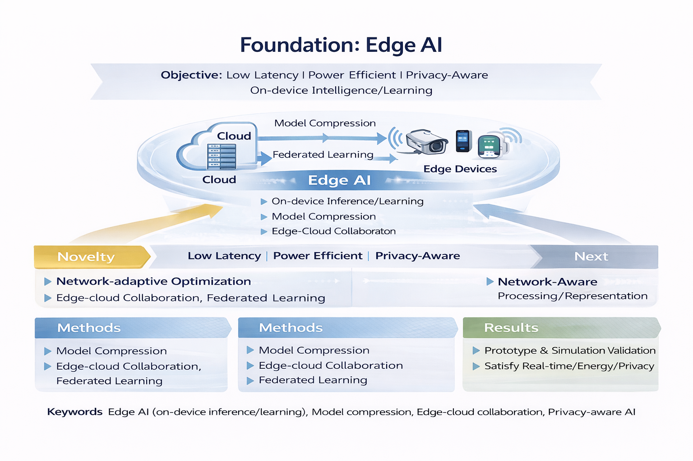
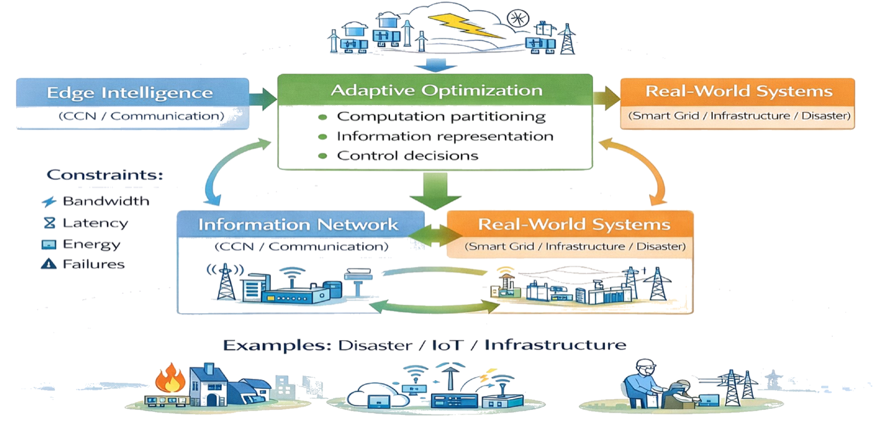
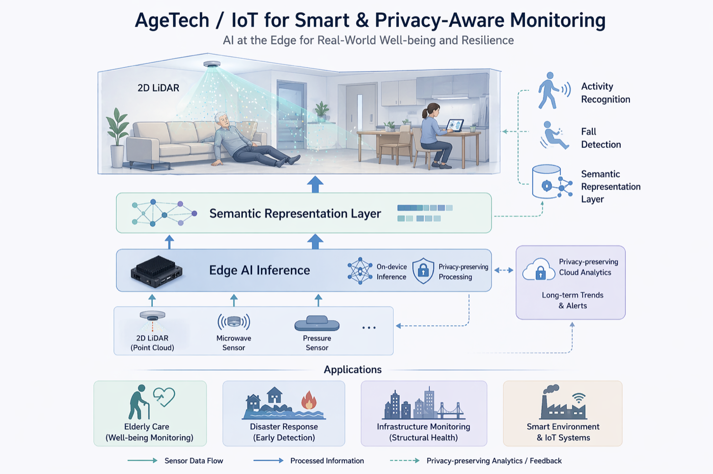

研究内容
当研究室では、制約のある現実環境で確実に動作する知能システムの実現を目指しています。特に、Edgeデバイス上で動作するAIを中核に、通信・分散システム・実世界アプリケーションを分離せず、統合的に設計することを重視しています。限られた計算資源、通信帯域、エネルギー、プライバシー要件の下で、必要な情報を選択し、必要な処理を適切に分担しながら、現場で役立つシステムを構築します。
Adaptive Edge Intelligence（中核）
Objective：センサ／デバイス上での実行を前提に、現実環境の制約の下でも動作可能な知能を実現する。
Novelty：ネットワーク状態やリソース制約に応じて、モデル、表現、処理分担を動的に最適化する設計指針を確立する。
Methods：軽量化（蒸留・量子化など）、オンデバイス推論・学習、エッジ—クラウド協調、フェデレーテッド学習、不確実性を考慮した推論・制御。
Results：リアルタイム性、計算量、エネルギー制約を満たすプロトタイプを構築し、シミュレーションや小規模デモで評価する。
Next：通信環境やシステム設計と連携しながら、より広い実環境で機能する知能システムへ拡張する。
キーワード
Edge AI, On-device inference/learning, Model compression, Edge–cloud collaboration, Federated learning, Privacy-aware AI

通信・分散システム設計
Objective：AI、通信、分散制御を一体として扱い、障害や変動に強いネットワーク／分散システムを設計する。
Novelty：通信を単なる制約条件としてではなく、設計対象として捉え、推論・制御・最適化と統合することでレジリエントな運用を実現する。
Methods：分散最適化、強化学習、GNN等を用いた資源制御、トラフィック工学、ネットワークスライシング／サービス連鎖（SFC）配置、協調型の分散システム設計。
Results：ネットワーク条件下での遅延・信頼性・コストの定量評価と、運用ポリシー設計の体系化を行う。
Next：Adaptive Edge Intelligenceと統合し、通信・分散システム・知能を一体として最適化する設計へ発展させる。
キーワード
Distributed systems, Resilience, Networked systems, QoS/QoE, Distributed optimization, Traffic engineering, SFC placement

実世界応用
Objective：高齢者支援、IoT、災害対応、インフラ運用などの実環境において、現実の制約下でも動作するスマートシステムを構築する。
Novelty：異種センサを共通の意味表現へ写像し、欠損、非IID、プライバシー制約に強い学習を実現しながら、実運用を見据えたシステム設計につなげる。
Methods：セマンティック表現学習、プライバシー保護型学習、エッジ側でのリアルタイム推論、通信・システム条件と連携した適応的運用。
Results：公開データ、シミュレーション、小規模実証を通じて、現場導入に向けた妥当性を確認する。
Next：災害、混雑、インフラ障害などの攪乱下でも機能し続けるレジリエントな実世界システムへ発展させる。
キーワード
AgeTech, Assistive technologies, IoT sensing, Activity recognition, Fall detection, Semantic representation, Privacy-preserving learning, Disaster resilience

代表プロジェクト
HeteroSenseFL：モダリティ異種連合学習テストベッド
複数施設でセンサー種類が異なる環境下での連合学習（FL）を、制御可能な条件で開発・評価するためのオープンソーステストベッドです。実データを収集することなく、現実的なセンサ異種性のもとで FL アルゴリズムを検証できます。
公開先
技術スタック
Python, PyTorch, Federated Learning, Heterogeneous Sensor Modalities